Notebook
Final Version
Definitions
At beginning I load some packets for nicer plots.
Start Population from the paper (PopNorm) with less Agents to spend calculationtime
Code
nA = 1000 # number of Agents
ID = seq_len(nA) # ID of the Agents
M0pop = 100 # Mean amount of Money in the Start-Population
# generating Start-Population
PopNorm <- data.frame( ID = ID,
Money= sort(rnorm(nA, mean = M0pop, sd = 0.2 * M0pop))
)Plot
Code
ggplot(PopNorm, aes(x = Money)) +
geom_histogram(position = "identity", alpha = 0.5, bins = 50, fill = 4) +
ylab("Frequency") +
scale_fill_manual(values = 4) +
theme_minimal() +
theme(legend.position = "top")
calculating the Probability for the next exchange
Code
calc_p <- function(M_dist) {
Dist <- data.frame(Money = M_dist,
probwin = 0,
probmed = 0,
probmean = 0
)
Sum <- data.frame(Money = c(min(Dist$Money),
max(Dist$Money),
median(Dist$Money),
mean(Dist$Money)
),
probwin = 0,
probmed = 0,
probmean = 0
)
rownames(Sum) <- c("min", "max", "med", "mean")
M_Med <- Sum["med", "Money"]
M_Mean <- Sum["mean", "Money"]
for(i in 1:nrow(Dist)) {
M_A <- Dist[i,"Money"]
M_oA <- Dist[c(-i),"Money"]
pwin <- M_oA*0
pmed <- M_oA*0
pmean <- M_oA*0
for(ii in 1:NROW(M_oA)) {
Pot <- max(M_A + M_oA[ii], 10e-8)
pwin[ii] <- 1-min(1, M_A/Pot)
pmed[ii] <- 1-min(1, M_Med/Pot)
pmean[ii] <- 1-min(1, M_Mean/Pot)
}
Dist[i,"probwin"] <- mean(pwin)
Dist[i,"probmed"] <- mean(pmed)
Dist[i,"probmean"] <- mean(pmean)
}
for (i in c("probwin","probmed","probmean")) {
Sum[[i]] = c(min(Dist[[i]]),
max(Dist[[i]]),
median(Dist[[i]]),
mean(Dist[[i]])
)
}
Output <- list(Sum = Sum, Dist = Dist)
return(Output)
}Calculating for Normpopulation
Code
ProbNorm <- calc_p(PopNorm$Money)plot
Code
figProb <- function(Prob, Title, xmax) {
Figd <- pivot_longer(data.frame(Prob$Dist),
cols = starts_with("p"),
names_to = "Outcome",
values_to = "Probability"
)
Figs <- Prob$Sum
Figp <- ggplot(data = Figd,
aes(x = Money,
y = Probability,
color = Outcome
)
) +
geom_point( alpha = 0.5, size = 1.5) +
scale_color_manual(name = "Probability to",
values = c(2, 3, 4),
labels = c("gain more than the Mean",
"gain more than the Median",
"gain")
) +
ylim(0, 1) +
xlim(0, xmax) +
geom_vline(xintercept = Figs["med","Money"],
linetype = "solid", color = 1) +
annotate("text",
x = Figs["med","Money"] * 0.95,
y = 0,
hjust = 1,
vjust = 0,
label = paste("Median\n=",
round(Figs["med","Money"], 0)),
color = 1) +
geom_vline(xintercept = Figs["mean","Money"],
linetype = "dashed", color = 1) +
annotate("text",
x = Figs["mean","Money"] * 1.05,
y = 0,
hjust = 0,
vjust = 0,
label = paste("Mean\n=",
round(Figs["mean","Money"], 0)),
color = 1) +
geom_hline(yintercept = Figs["mean","probmed"],
linetype = "solid", color = 3) +
annotate("text",
x = xmax,
y = Figs["mean","probmed"] * 1.05,
hjust = 1,
vjust = 0,
label = paste("Mean =",
round(Figs["mean","probmed"], 2)),
color = 3) +
geom_hline(yintercept = Figs["mean","probmean"],
linetype = "solid", color = 2) +
annotate("text",
x = xmax,
y = Figs["mean","probmean"]*0.95,
hjust = 1,
vjust = 1,
label = paste("Mean =",
round(Figs["mean","probmean"], 2)),
color = 2) +
labs(title = Title) +
theme_light() +
theme(legend.position = "top",
legend.justification = c(0, 1))
return(Figp)
}
figProb(ProbNorm, "Probability at Beginning", 200)Warning: Removed 147 rows containing missing values or values outside the scale range
(`geom_point()`).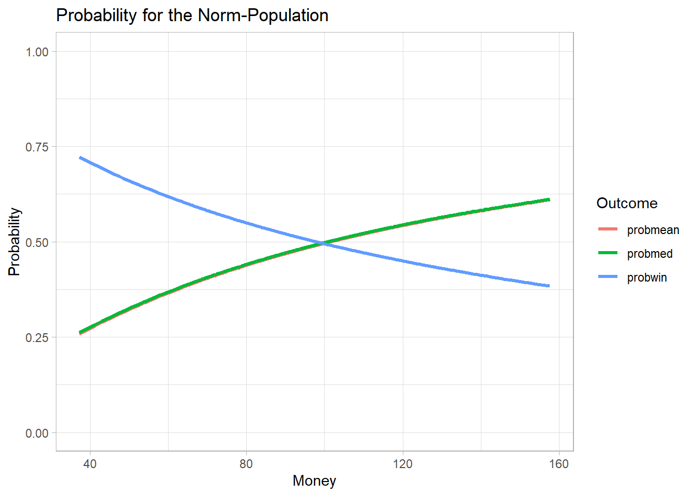
Simulation
Code
ecosim <- function( n, M_dist, TL = 0 ) {
df <- data.frame(ID=seq(1,NROW(M_dist)),
nE=0,
MT_S=M_dist,
MT_E=M_dist
)
if (TL > 0) {
M_TL <- data.frame(n0 = df$MT_S)
}
for(i in 1:n) {
rdf <- sample(df$ID, size=2)
rds <- splitpair()
df[rdf,"nE"] <- df[rdf,"nE"] + 1
df[rdf,"MT_E"] <- sum( df[rdf,"MT_E"]) * rds
if ( TL > 0 ) {
if ( i %% TL == 0) {
M_TL [[paste0("n",i)]]<- df$MT_E
}
}
}
Output <- list("Sum" = df)
if ( TL > 0 ) {
rownames(M_TL) <- df$ID
Output$Timeline <- M_TL
}
return(Output)
}simulieren
Code
sNorm <- ecosim(50000, PopNorm$Money, TL = 500)ploten Histogram
Code
figHist <- function(Sim_Sum) {
Fig <- pivot_longer(data.frame(Sim_Sum),
cols = starts_with("MT"),
names_to = "Distribution",
values_to = "Money"
)
Fig$Distribution <-recode(Fig$Distribution,
"MT_S" = "at Begining",
"MT_E" = "at the End"
)
Figp <- ggplot(Fig, aes(x = Money, fill = Distribution)) +
geom_histogram(position = "identity", alpha = 0.5, bins = 50) +
ylab("Frequency") +
scale_fill_manual(name = NULL, values = c(4,3)) +
scale_color_manual(name = NULL, values = c(4, 3)) +
theme_minimal() +
theme(legend.position = "top")
return(Figp)
}
figHist(sNorm$Sum)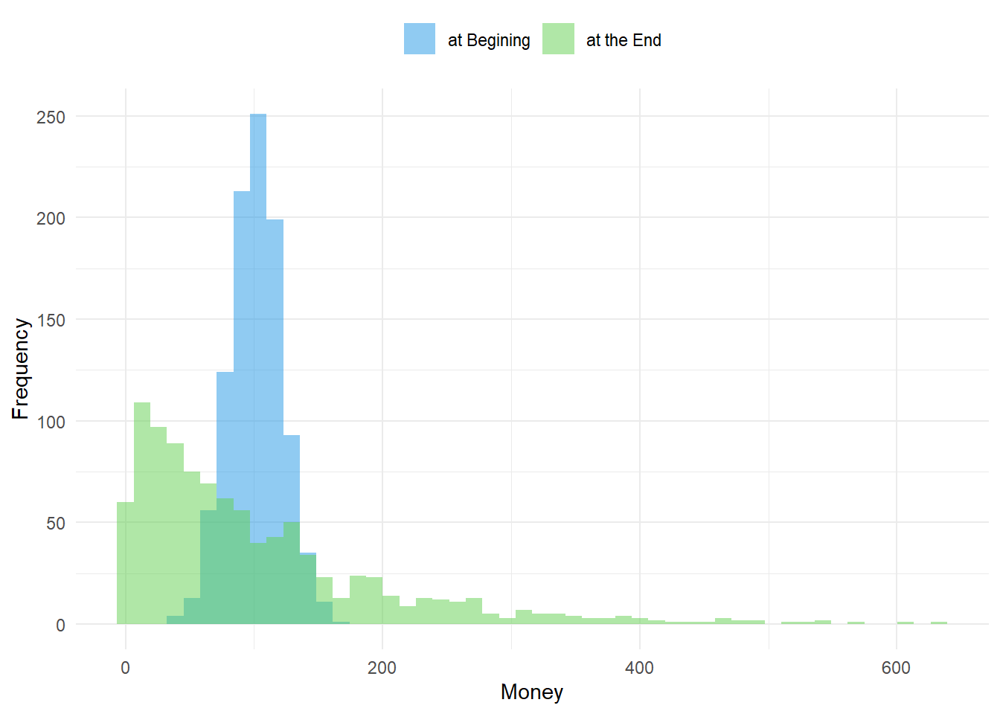
Timeline Money of 9 Agents
Code
MTime <- data.frame(ID,sNorm$Timeline)
sID <- c(1,2,3,nA/2-1,nA/2,nA/2+1,nA-2,nA-1,nA)
sMTime <- MTime[sID,]
Fig03 <- pivot_longer(data.frame(sMTime),
cols = !matches("ID"),
names_to = "Time",
names_prefix = "n",
names_transform = list(Time = as.integer),
values_to = "Money"
)
Fig03$ID <- sprintf("%04d", Fig03$ID)
ggplot(data = Fig03, aes(x = Time, y = Money, color = ID)) +
geom_line() +
ggtitle("Timeline for some Agents") +
xlab("number of exchanges") +
labs(color = "Agents ID") +
scale_color_manual(values = c(2,2,2, 1,1, 1,3,3,3)) +
theme_light() +
theme(legend.position = "right",
legend.justification = c(0, 1))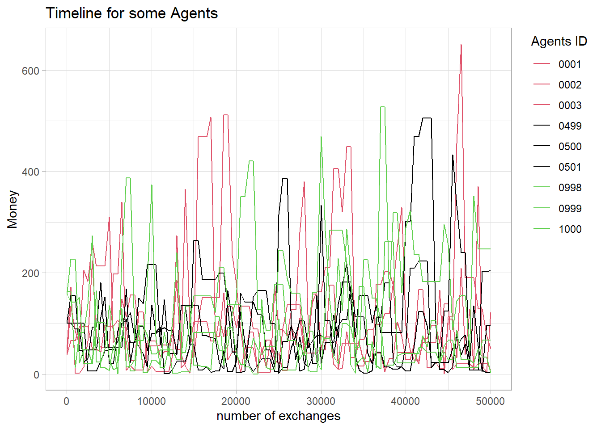
Probabilitiy at some Timepoints
Code
FigA <- figProb(calc_p(sNorm$Timeline[,1]),
"Probability at Beginning", 850)
FigB <- figProb(calc_p(sNorm$Timeline[,2]),
"Probability after 500 exchanges", 850)
FigC <- figProb(calc_p(sNorm$Timeline[,4]),
"Probability after 1000 exchanges", 850)
FigD <- figProb(calc_p(sNorm$Timeline[,NCOL(sNorm$Timeline)]),
"Probability at the End", 850)
FigA 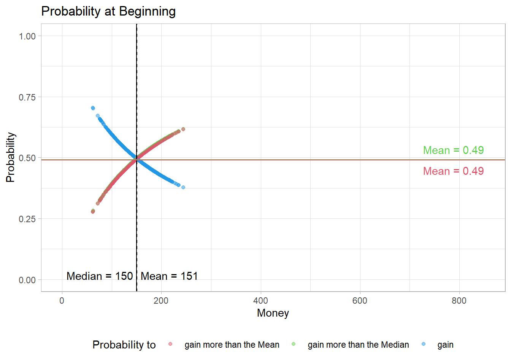
Code
FigB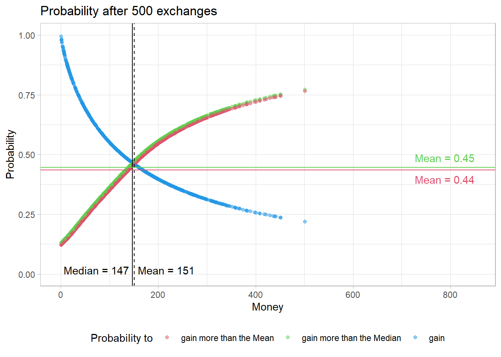
Code
FigC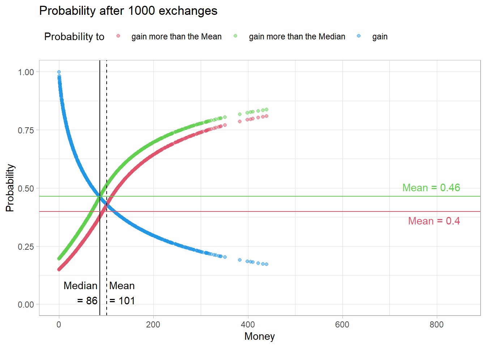
Code
FigD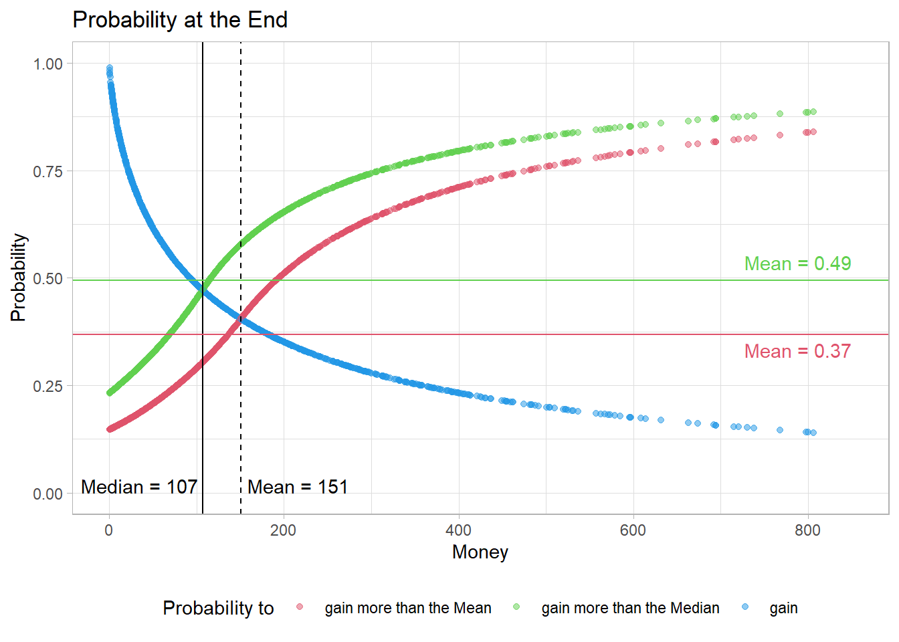
calculating Probabilities for all timesteps
Code
calc_p_t <- function(M_dist) {
pnt <- calc_p(M_dist[,1])
tx <- as.numeric(gsub("n", "",colnames(M_dist)[1]))
pnts <- data.frame(Time = rep(tx, times = 4),
Res = colnames(pnt$Sum),
t(pnt$Sum)
)
for(i in 2:ncol(M_dist)) {
pnt <- calc_p(M_dist[,i])
tx <- as.numeric(gsub("n", "",colnames(M_dist)[i]))
pnti <- data.frame(Time = rep(tx, times = 4),
Res = colnames(pnt$Sum),
t(pnt$Sum)
)
pnts <- rbind(pnts,pnti)
}
rownames(pnts) <- NULL
return(pnts)
}
ProbNormt <- calc_p_t(sNorm$Timeline)Plot
Code
figProb_t <- function(Prob, Title) {
Fig <- Prob[Prob$Res!="Money",c("Time","Res","mean")]
Figp <- ggplot(data = Fig, aes(x = Time, y = mean, color = Res)) +
geom_line(linewidth = 1) +
scale_color_manual(name = NULL, values = c(2, 3, 4),
labels = c("gain more than the Mean",
"gain more than the Median",
"gain")) +
ggtitle(Title) +
xlab("number of exchanges") +
ylab("Mean-Probability in the Population") +
ylim(0.30, 0.6) +
theme_light() +
theme(legend.position = "top",
legend.justification = c(0, 1))
return(Figp)
}
figProb_t(ProbNormt, "Probability to ... of Money - Timeline")EvenPop
Code
# generating Start-Population
PopEven <- data.frame( ID = ID,
Money = rep(M0pop, times = nA)
)Code
ProbEven <- calc_p(PopEven$Money)Code
figProb(ProbEven, "Probability at Beginning", 300)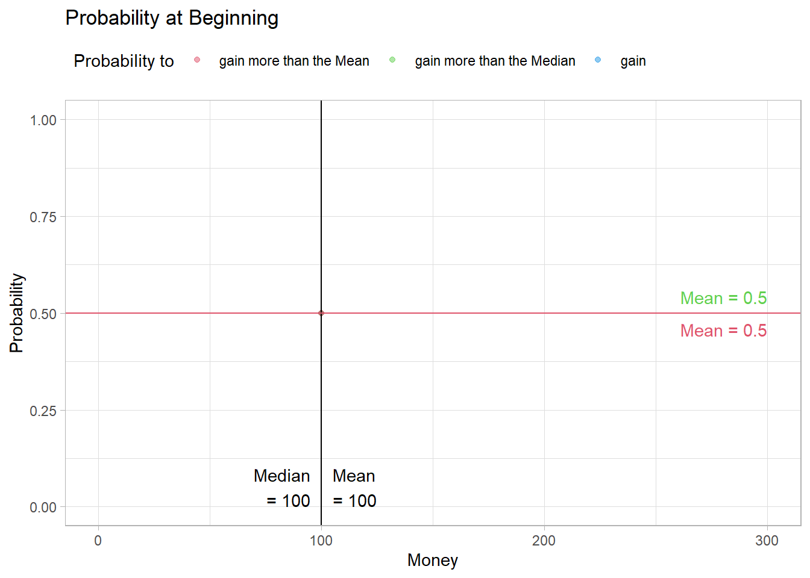
Code
eNorm <- ecosim(50000, PopEven$Money, TL = 500)
figHist(eNorm$Sum)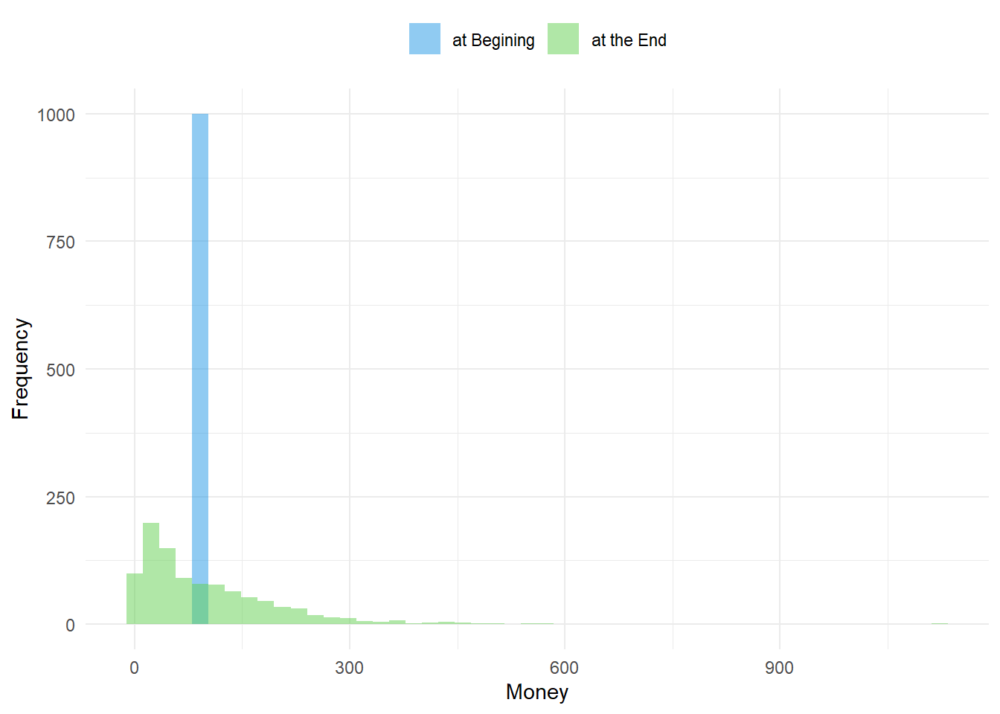
Code
FigA <- figProb(calc_p(eNorm$Timeline[,1]),
"Probability at Beginning", 850)
FigB <- figProb(calc_p(eNorm$Timeline[,2]),
"Probability after 500 exchanges", 850)
FigC <- figProb(calc_p(eNorm$Timeline[,4]),
"Probability after 1000 exchanges", 850)
FigD <- figProb(calc_p(eNorm$Timeline[,NCOL(eNorm$Timeline)]),
"Probability at the End", 850)
FigA 
Code
FigB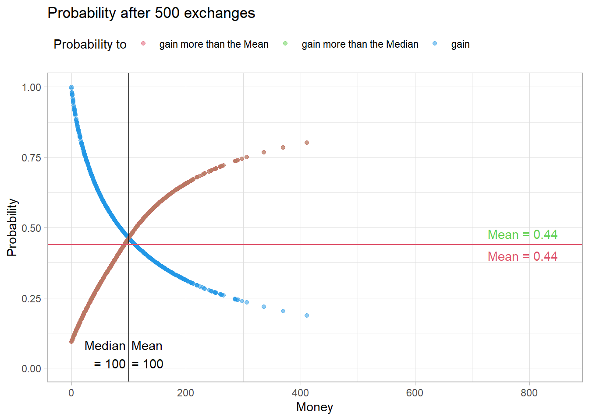
Code
FigCCode
FigDWarning: Removed 3 rows containing missing values or values outside the scale range
(`geom_point()`).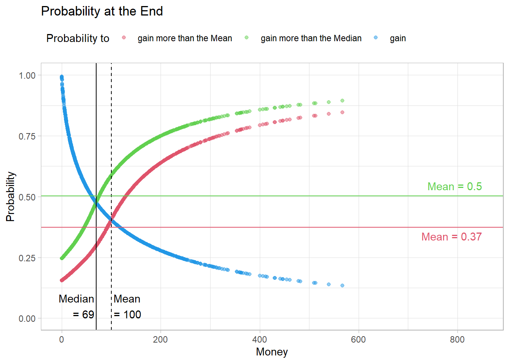
Code
ProbEvent <- calc_p_t(eNorm$Timeline)Code
figProb_t(ProbEvent, "Probability to ... of Money - Timeline")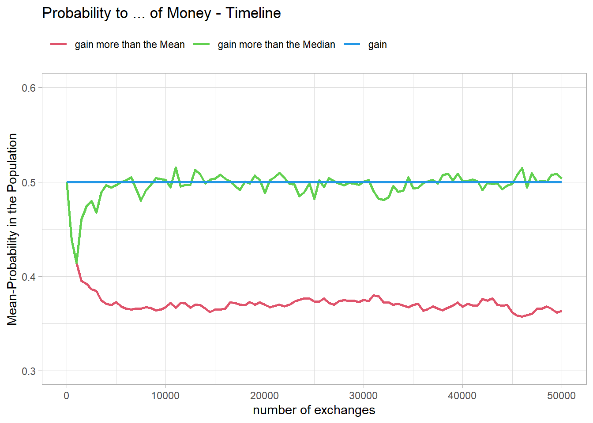
Vergleich
Code
sNorms <- ecosim(5000, PopNorm$Money, TL = 50)
ProbNorms <- calc_p_t(sNorms$Timeline)
eNorms <- ecosim(5000, PopEven$Money, TL = 50)
ProbEvents <- calc_p_t(eNorms$Timeline)Code
figProb_t(ProbNorms,
"Probability to ... of Money\nTimeline for the Norm Population")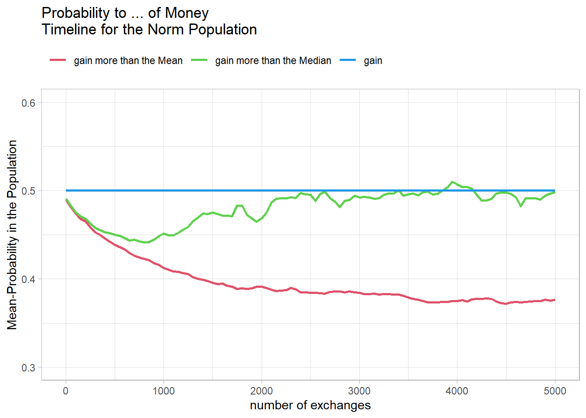
Code
figProb_t(ProbEvents,
"Probability to ... of Money\nTimeline for a even Population")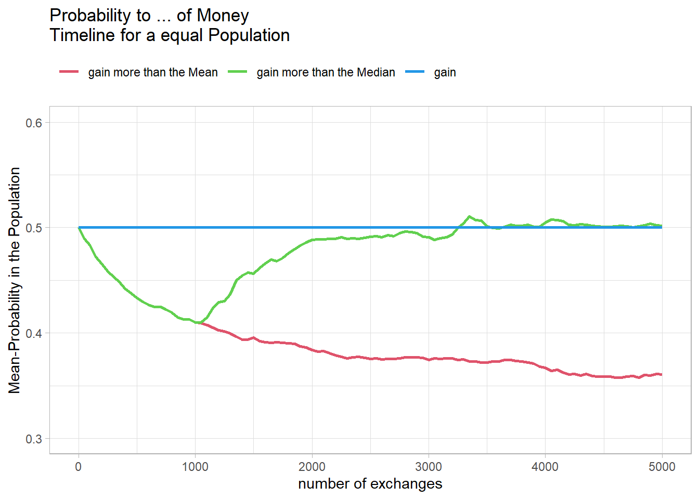